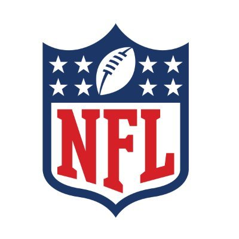

Az NFL-ről
Az NFL, az Amerikai Egyesült Államok legfelsőbb szintű amerikaifutball-ligája, valóságos színpad a csodálatos sporteseményeknek és izgalmas versenyeknek. A liga két konferenciára, az NFC-re (National Football Conference) és az AFC-re (American Football Conference) van osztva, tovább szűkítve a mezőt az északi, déli, keleti és nyugati divíziókra.  A szezon során a csapatok küzdenek azért, hogy kijussanak a playoffba, az év végi rájátszásba, amely során a legjobb csapatok feszülnek egymásnak a konferencia- és a végül a Super Bowl döntőjében. A playoffokon átjutott csapatok a két konferencia győztesei, hogy megküzdjenek a legnagyobb elismerésért, a Super Bowl trófeáért. Az év egyik legkiemelkedőbb eseménye a draft, ahol az egyetemi játékosoknak lehetőségük van bekerülni az NFL-be. A csapatok sorrendben választják ki a legígéretesebb tehetségeket, és a draft hozza el azt az izgalmat, hogy melyik játékos melyik csapathoz kerül. Az NFL nemcsak sport, hanem az amerikai kultúra fontos része is. A várva várt Super Bowl vasárnapi eseményévé vált, ahol a családok, barátok összegyűlnek, hogy együtt éljék át a mérkőzés izgalmát és a féktelen show-t. Az NFL tehát nem pusztán egy sportliga; ez az érzelmek, az izgalom és a tehetség színtere, amely évről évre újabb történetekkel gazdagítja a sport világát.
San Francisco 49ers
Az 2016 és 2023 közötti időszak a San Francisco 49ers számára több változást és kihívást hozott magával. A csapat ezen időszak alatt különböző szezonokat élt meg, és több kulcsfontosságú esemény is megtörtént a vezetőségben és a játékosállományban. A 2016-os szezon kezdetén Chip Kelly volt a 49ers főedzője, és Trent Baalke a csapatmenedzsere (general manager). Azonban a csapat számára nem sikerült eredményesen szerepelnie, és mind a főedző, mind a GM pozíciója megüresedett az év végére. A 2017-es szezonra Kyle Shanahan lett a főedző, és John Lynch a general manager pozícióját töltötte be. Ez a változásokkal teli időszak a csapatnak lehetőséget teremtett az újjáépítésre. A következő évek során a 49ers fokozatosan javította teljesítményét, és a 2019-es szezonban eljutottak a Super Bowlig, ahol azonban a Kansas City Chiefs elleni mérkőzésen alulmaradtak. A szezon sikeres volt, és a csapat számos tehetséges játékost tartalmazott. A draftok is kulcsszerepet játszottak a csapat fejlődésében. A 2019-es draftban a 49ers kiválasztotta Nick Bosát, akit a csapat kiváló pass rusherjeként alkalmaztak. Fred Warner (az én kedvenc játékosom), a linebackerek közötti kiemelkedő játékos, is a 2018-as draftban csatlakozott a csapathoz. A 2020-as draft során a 49ers tovább erősítette védelmét, kiválasztva Javon Kinlawt és Brandon Aiyukot. Deebo Samuel is a 2019-es draft része volt, és az első évben már fontos szerepet játszott a támadófolyamatokban. George Kittle, a tehetséges tight end, 2017-ben csatlakozott a csapathoz, és az egyik legjobb játékossá vált ebben a pozícióban az NFL-ben. Az időszak alatt a 49ers sikeresen fejlesztette ki tehetséges játékosait, és bár a szezonok során voltak kihívások, a csapat képes volt versenyképes maradni, különösen a 2019-es szezonban elért Super Bowl részvétele révén. A San Francisco 49ers továbbra is izgalmas és tehetséges csapat a NFL-ben, és a jövőben is érdemes lesz figyelemmel kísérni, hogy milyen eredményeket érnek el.